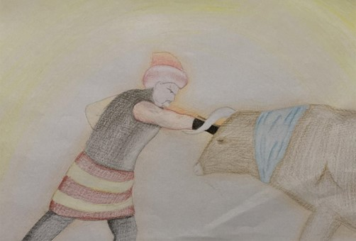

Ben Boğaç… Dirse Han ile onun eşi olan han kızının oğlu. Babam Dirse Han, hanlar hanı Bayındır Han’ın verdiği bir toyda oğlu ve kızı olmadığı için kara otağa oturtulmuş, altına kara keçe serilmiş, önüne de kara koyun yahnisi koyulmuş. Bu duruma öfkelenen babam obasına döndüğünde müstakbel annemin tavsiyesiyle dağ gibi et yığdırıp kalın Oğuz beylerini davet etmiş, açları doyurup borçluları borcundan kurtarmış. Bu, Tanrı’nın hoşuna gittiği için ben dünyaya gelmişim. Adımı, öldürdüğüm vahşi boğadan almışım. Çocuk yaşta üzerimize gelen azgın boğadan kaçmayıp onunla mücadele ettim, boğayı öldürmeyi başarabildim. Bunun üzerine Dede Korkut benim adımı “Boğaç” koydu. Doğumumla oğulsuzluktan kurtulan babam Dirse Han, adımı aldıktan sonra bana hanlık verdi. Fakat babamın kırk yiğidi onları ihmal ettiğimi düşünerek babamı bana karşı yalanlarla kışkırttılar. Benim babam, bu yalanlara inanarak bir av sırasında beni sırtımdan okla vurdu. Beni öldü bilen babam obamıza geri dönerek beni soran anneme avda idi, gelir daha sonra diyerek yalan söyledi. Annem başıma bir iş geldiğini düşünerek yanındaki kırk kızıyla birlikte beni aramaya çıktı. Ben yaralı bir şekilde yatarken yanıma Hızır geldi, dağ çiçeğiyle anne sütünün karışımının yarama iyi geleceğini söyleyip ortadan kayboldu. Annem beni yaralı bir şekilde buldu, Hızır’ın dediği yapıldı ve ben yaralı bir şekilde obamıza geri döndüm. Benim ölmediğimi haber alan babamın kırk yiğidi, babam Dirse Han’ın olan bitenleri öğrenip kendilerini öldüreceğinden çekindikleri için babamı tutsak edip kâfirlere teslim etmeye kalkıştı. Annemin isteği üzerine daha önce beni öldürmek isteyen babamı adamlarının elinden kurtarıp obaya geri getirdim. Bu olaydan sonra babamın yerine geçtim ve obamızı yönetmeye başladım.
